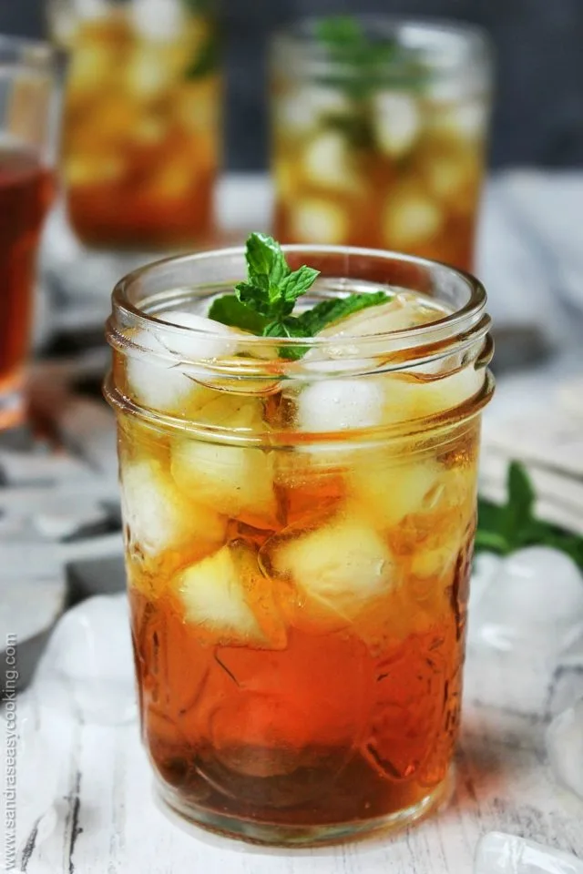

BEVERAGES
Rooibos Iced Tea
Rooibos tea is known to relieve stress, nervous tension, and
hypertensive conditions. Hypertension is more commonly known as high
blood pressure and rooibos tea acts as a bronchodilator. However,
according to the South African Rooibos Council, rooibos is not a true
tea, but an herb. South Africa is the only country in the world
producing rooibos, boasting upwards of 450 growers who produce up to
15,000 tons of rooibos annually.

Instructions
Heat the water until the water is rolling. nearly boiling. Place loose tea
in the tea infuser or use tea bags. Allow it steep for 3-5 minutes. If you
like it stronger use more tea. Add sweetener to taste. Add while the tea
is still hot. Let the tea cooled down for 30 minutes or so before serving
it over the ice cubes. Place the tea in the container and keep it in the
ridge chilled for the best-tasting results.
Recipe from
Sandra's Easy Cooking